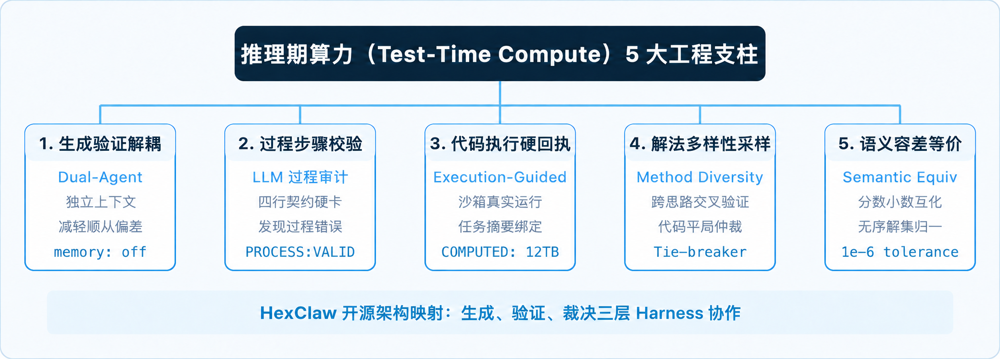
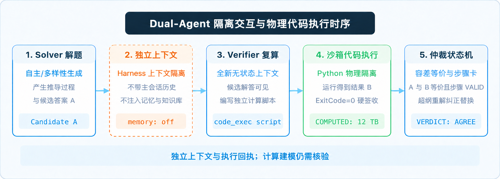

三层架构映射 × 步骤级过程审计协议 × 代码执行硬回执 × Model-Level 与 System-Level 协同全景
你瞧，如果让当下的大语言模型去干“文科”，搞文学创作、评判行业风云，它的语言表现力往往让人拍案叫绝。比如我们在 HexClaw 桌面端向它抛出一句“天下 AI 谁是英雄？”，它借小蟹之口给出的这段“煮酒论道”，就把整个 AI 圈的顶流名场面缝得浑然天成：
（图 1：ChatGPT 举杯，谓河蟹曰：天下 AI 谁是英雄？· HexClaw 桌面端 K12 皮肤暗色版截图）
从“号北境夜王、抬手间万号冰封”的 Claude，到“粮草如山、稳居宇宙中心”的 Gemini；从“御飞车腾空直闯 ETC、驾火箭叩南天门”的 Grok，再到“潜东海、广聚鱼虾开仓济民”的 DeepSeek……自回归注意力的模式匹配与文学修辞，在这里展现出了恰到好处的幽默与灵性。
然而，只要把题目从“写段子”切到“算账目”——面对严谨的数值推导与符号逻辑（比如我们在《4.8 TB 怎么算出 12 TB？》中作为真实讲题案例的那道六年级应用题），工程落地的挑战就完全不同了：
大语言模型在做数理推导时，底层依然是在预测下一个 token 的概率分布。即使给它充足的推理预算、开启各家标配的“深度思考（Reasoning）”模式，模型在封闭的上下文里输出了数千字的内心独白，推导看似逻辑严密、步步有据，但如果在中间步骤发生微小的量纲或数值偏差，自回归机制往往会把前置偏差层层固化，单靠语言层面的“自我反思”极易陷入自我合理化的死循环。对于严谨的生产级辅导或工程系统，这种偶发的概率性幻觉是不可接受的。
为什么同一台机器，写《煮酒论英雄》时文采飞扬、接梗自如，处理严谨符号逻辑与数值推导时却需要外部机制来兜底？
本文核心判断：
（注：本文所说的约束幻觉，是用独立审查与可追溯执行证据减少无依据计算；执行成功不保证建模或结论正确。无法客观验证时，可标记 UNVERIFIABLE 并提示人工复核。）
1. 单一上下文内的自我纠错可能受到既有推导的锚定；让同一个模型既解题又裁判，增加推理 Token 仍不能单独证明答案正确；
2. 工业级 Test-Time Compute 的破局点在于“生成与验证解耦（Dual-Agent 对偶）”与“代码执行驱动验证（Execution-guided Verification）”——验证者使用新上下文和工具白名单，并由提示词要求先独立计算、后审计解法；候选答案仍同时可见，执行回执提供运行证据，不能保证建模正确；
3. 普通工程团队无需千万美元训练专用 PRM 神经模型；在框架层（Harness-Level）通过状态机协议、代码沙箱和解法多样性检查，能让普通的 7B/14B 本地开源模型（正如我们在《打通本地推理模型最后一公里》中介绍过的 DeepSeek-R1 与 Qwen 蒸馏系）引入可检查的计算证据；结果仍受模型、建模与题目范围影响，不能保证零错误。
30 秒版：
单靠大模型在封闭上下文里“自我反思”极易陷入自我合理化的死循环。本文基于 HexClaw 的
engine/solve.go与engine/solve_verifier_node.go源码，拆解推理期算力（TTC）在工程层面的三层落地：看系统如何通过运行期上下文冷隔离（memory: off, knowledge: off）与提示词中的“先独立算后审计”减少顺从偏差；如何用四行轻量协议落地步骤级过程审计，并在数值验证路径中检查任务绑定的执行回执；回执无效时按具体路径报错或降级；最后借助解法多样性采样与容差原语（1e-6）完成平局仲裁，全景对比 Model-Level 慢思考与 System-Level Harness 的潜在协同作用。
从快思考到慢思考：推理期算力（TTC）的演进与自纠错“硬墙”
借用“快思考”与“慢思考”的视角，并参考前 OpenAI 联合创始人、AI 科学家 Andrej Karpathy 对大语言模型工作方式的介绍，可以这样理解：自回归生成可类比 System 1（快思考）——依靠自回归概率模式匹配本能地吐出下一个词；而行业追逐的 Test-Time Compute，正是通往 System 2（慢思考、试错、规划与外部验证） 的一种工程路径。
OpenAI 研究科学家 Noam Brown（曾主导开发 Libratus 与 Pluribus）在 TED AI 2024 谈及博弈决策与推理期扩展时曾给出一个形象换算：在一项扑克对局实验中，额外思考 20 秒获得的提升，可与将模型规模和训练时长分别扩大约 100,000 倍的效果作对照。这是该实验中的比较，不能视为所有语言模型任务的通用换算。
把技术演进的逻辑线往前拉：如今执掌 Anthropic 的创始人兼 CEO 达里奥·阿莫代伊（Dario Amodei），早在 2020 年担任 OpenAI 研究副总裁期间，便带队发表了奠基性的论文《Scaling Laws for Neural Language Models》，正式确立了预训练扩展律（Pre-training Scaling Law）——参数规模、语料规模与预训练算力每呈指数级增加，模型的性能损耗便呈现出极其平稳的幂律下降。这条定律直接拉开了全球万卡集群算力角逐的序幕，也构筑了行业对“大力出奇迹”长达数年的工程信仰。
但当海量高质量语料逐渐耗尽、预训练的边际收益逼近物理墙面时，行业的算力重心开始向第二曲线迁移：推理期扩展律（Test-Time Scaling Law）。OpenAI o1 率先验证了让模型在推理阶段“慢思考”的巨大潜力；而真正以极具颠覆性的姿态打破技术垄断并彻底引爆全行业的，则是 DeepSeek-R1 系列——其中 DeepSeek-R1-Zero 率先在学术界实证了跳过监督微调（SFT）冷启动、仅凭纯强化学习（Pure RL）与规则奖励，模型便能在测试期自发涌现出顿悟（Aha moment）、反思与长链推导能力；随后的正式版 DeepSeek-R1 则结合冷启动数据与多阶段训练，将其推向工业可用。从 DeepSeek 团队在 2026 年 9 月中旬正式发布 DeepSeek-V4.1-Flash，到 10 月开源其生产级高性能推理框架 DeepInfer（开源至今已迅速突破 24k GitHub Star，官方仓库：github.com/deepseek-ai/DeepInfer），开源与闭源阵营都在把主战场转向推理期算力（Test-Time Compute）——让模型在回答时“多想一会儿、多搜索几次、多自我反思”。
然而，当工程师把 R1 这类推理模型真正接入严谨的生产业务时，另一道硬墙随之浮现：模型单靠封闭上下文内的自言自语反思，很多时候并不是在修正错误，而是在用更自洽的修辞进行“自我合理化”。AAAI Fellow、著名 AI 推理学者 Subbarao Kambhampati 教授在论文《Can Large Language Models Reason and Plan?》中分析指出：自回归模型在封闭的自然语言循环里很难实现真正的自纠错（Self-Correction）；在缺乏外部物理环境验证器介入时，单纯的语言反思容易退化为近似检索（Approximate Retrieval）的再次采样。如果不对这一过程套上硬性的工程约束，所谓的推理期算力，往往只是在成倍放大幻觉的置信度。
架构全景：推理期算力（TTC）的三层体系与 HexClaw 5 大工程支柱
在 HexClaw 的开源工程实践中，我们将学术界关于推理期算力（以 OpenAI o1/o3、DeepSeek-R1、Stanford s1 为代表）的前沿探索，归纳并映射为基于“生成、验证、裁决”三层架构的 5 个关键工程支柱。我们先用一张架构全景图，将这五大支柱与 HexClaw 的开源实现逐一对齐：

（图 2：推理期算力（TTC）5 大工程支柱与 HexClaw 开源源码映射全景）
梳理完这 5 个工程支柱，可以看到只在 Prompt 层自省缺少独立执行证据；各环节能降低特定风险，但不能消除所有错误。
关键辨析：模型内推理（Model-Level）与系统级编排（System-Level）的协同互补
在技术交流中，很多工程师常问的一个问题是：“OpenAI o1 和 DeepSeek-R1 已经在模型内部支持了 long thinking，应用层为什么还要在外部做双智能体与代码沙箱核算？”
这个问题的背后，涉及一个最关键的技术定位：Model-Level 慢思考与 System-Level 外部 Harness 的协同互补。
| 对比维度 | OpenAI o1 / DeepSeek-R1 | HexClaw 的 solve.go 开源架构 |
|---|---|---|
| 实现层级 | Model-Level（模型权重内） 在模型权重内部通过大规模强化学习（RL）硬训出长思考链（<think> tokens） |
System / Harness-Level（系统框架层） 用外部 Harness 编排 Solver + Verifier 双智能体 + 代码执行沙箱 |
| 工作方式 | 单模型单上下文“脑内独白”，依靠自回归概率逐步展开思考生成 | 独立上下文与工具白名单；提示词要求先独立复算、再审计每一步，候选答案并未隐藏 |
| 验证手段 | 模型内自回归长思考链（纯语言推导，默认脱离外部物理沙箱硬回执） | 外部代码沙箱（code_exec）可提供与任务输入摘要绑定的执行回执；具体行为依验证路径而异 |
| 算力门槛 | 取决于模型架构与训练方式；训练推理模型可能需要大量数据和算力 | 可复用 7B/14B 本地开源模型，但仍需模型和沙箱资源；不能因此保证结果正确 |
| 证据与边界 | 依然可能在冗长的自我反思后产生更具修辞欺骗性的“高置信度幻觉” | 双轨证据：回执记录执行情况，模型负责过程审计；回执失败时行为依路径及错误而异 |
| 两者关系 | 专注模型内在推演与假设生成（Generator 基石） | 可以协同，收益需评测：模型内长思维链 × 系统外物理沙箱硬回执 |
在我们此前拆解四代范式演进的《Loop Engineering》中，核心就是把控制面外推；而 Anthropic 在其 2024 年底发布的《Building Effective Agents》中，也将这种架构归纳为经典的 Evaluator-Optimizer（评估器-优化器） 范式：
Anthropic 将 Evaluator-Optimizer 描述为一个生成、另一个评价并反馈的迭代模式，适合有明确评价标准且迭代价值可衡量的任务；其 Agent 部分另强调利用工具结果等环境反馈。本文在这一思路上讨论执行回执：回执提供运行证据，但不能代替对建模和问题前提的检查。
—— 核心思想源自 Anthropic Engineering, Building Effective Agents (2024-12)
很多架构师看到这里会问一个关键问题：“如果我的底层推理加速已经换上了 DeepInfer，或者底座直接选用了自带 long thinking 的 DeepSeek-R1 / o1，应用层为什么还要做这套外部双智能体和沙箱？”
答案是两层可以协同，实际收益仍需评测。DeepInfer 等框架在基础设施层解决的是推理算力的高吞吐调度与端到端延迟；R1/o1 在权重层解决的是内部思维链（<think> tokens）的探索广度；而 HexClaw 在系统层解决的，则是让思考落地为可检验确定性执行证据的裁判硬回执。哪怕底座是具备极强慢思考能力的大模型，在封闭的自回归自然语言循环中依然无法为自身的四则运算出具客观程序执行背书；模型内推演与系统外沙箱结合，可以让执行过程更可追溯，但模型建模或审计仍可能出错，效果需要结合实际任务评估。
接下来，我们就扒开 HexClaw 开源源码，逐一拆解这五大支柱在工程中的真实实现。
支柱一 · 求解与验证解耦（Dual-Agent）：避免自回归的“顺从偏差与先入为主”
在上一篇《Harness Engineering》里我们聊过一个反直觉的组件：裁判家族。金融系统里叫 maker/checker——办业务的和复核的必须是两个人。拉磨的“赛博牛马”，绝不能自己给自己签发质检单。
在 HexClaw 的推理引擎核心调度器 engine/solve.go 中，解题流程从常数定义阶段就被拆解为不同职责的子智能体：
常见的两阶段审核实现，往往只是把求解者的完整对话拼接在末尾，追加一句“请检查上述解答是否正确”。在这种输入构造下，自注意力机制顺着前文的概率分布展开，验证器极易受到前置思维链的锚定偏差（Anchoring Bias）影响，倾向于顺从先前的推导并得出“逻辑严密、完全正确”的附和结论。
HexClaw 对 Verifier 实施的是运行期无状态隔离：
这里的元数据断言排除了所有主会话历史、长期记忆（memory: off，屏蔽掉《会“做梦”的 Agent 记忆》中沉淀的长期画像）与外部知识库（knowledge: off，切断了在《Context Engineering》中详述的检索增强通道）。这里的隔离属于运行期上下文冷隔离（Fresh Context Isolation）：排除主会话累积的注意力干扰与无用工具；Verifier 拿到的是原始题目、待校验的完整解法和候选答案，并未遮蔽解法内容。
而在调度协议的提示词层，系统进一步固化了“先独立复算、后审计解法”的时序防顺从设计：
“对数值计算题，请先完全独立地用 code_exec 写代码重新计算正确答案，不要先相信待校验内容；独立计算后，再逐步审计提供的完整解法。”—— 节选自hexclaw/engine/solve.go:1230Prompt 约束模板
需要客观看待的是：当前实现是一次性将题目与候选注入提示词中，所谓“先算后审”属于提示词层面的时序约束协议（In-Context Temporal Protocol），通过强指令驱动模型优先独立列式建模，尽可能弱化候选答案带来的先入为主与锚定偏见，而非网络线路上分两轮隐藏答案的物理盲审。

（图 3：Dual-Agent 隔离交互与物理代码执行闭环时序。退出码为 0 只是回执校验条件之一，还需检查任务绑定和输出完整性；执行成功不能证明建模正确。）
支柱二 · 步骤级过程审计协议：轻量级工程化 PRM 落地
如果校验只看最终答案，系统就会放过一类极其隐蔽的问题：歪打正着。推导过程中的参数关系完全搞反，两处算术错误巧合抵消，最终碰巧凑出了正确的数字。
这正是 ORM（Outcome Reward Model，结果奖励模型） 的固有盲区——只根据终态打分，容易放过中间步骤的逻辑坍塌。OpenAI 在 2023 年发表的《Let's Verify Step by Step》中提出了 PRM（Process Reward Model，过程奖励模型），主张对每一个中间推导步骤单独判定。理论上很严谨，但针对具体业务单独标注上万条步骤数据、从头训练一个专用的 PRM 判分模型，显存与工程成本非常高。
需要客观澄清的是：HexClaw 在这里并没有耗费数千万美元去训练一个专门的过程奖励神经网络；正如在《Prompt Engineering》中所讨论的——让 Prompt 沉下去作为 Agent 最底层的交互协议，在框架层（Harness-Level）通过 LLM-as-Judge 结合严格的四行协议，实现了基于模型判断的步骤级过程否决；这是协议化审计，并不等同于训练过的 PRM，也不能保证审计准确。以下示例展示提供学段约束时的格式；未提供约束时不包含 OUT_OF_SCOPE：
而在核心裁决流 verifySolutionWithGuides（solve.go:874-876）中，系统对过程有效性做出了强制否决：
解析到 PROCESS: INVALID 后，只要不是超纲题，系统无条件把 verdict 改为 DISAGREE。随后的 formatSolve（solve.go:1570，警告渲染见 line 1614）只负责在判定未通过时向用户渲染警告行，不参与裁决本身。同时，在高级校验路径中，系统还通过 solve_verifier_node.go 预留了结构化 verificationStep JSON 契约，为特定年级教学大纲的深度检查提供标准化数据规范。
当求解者的最终答案与验证器算出的数字一致，但某个关键步骤被标为无效时，系统依然判定其未通过验证，并输出明确警告。答案凑对但过程错，也必须判 DISAGREE。在工程落地中，过程错误的结论即使碰巧答对也不能放行，避免引入虚假的确定性。
支柱三 · 代码执行硬回执（Execution-Guided）：双轨混合裁决与任务摘要绑定
用自然语言去审计自然语言，本质上是用一段可能产生幻觉的概率文本，去评价另一段概率文本；两端都在按概率猜测，系统无法形成闭环判定。正如 Program-Aided Language Models（PAL, Gao et al., 2022）所确立的核心分工：让大模型负责符号理解与程序编写，将具体数值计算彻底剥离并委托给外部确定性解释器。
但这里必须划清一条绝不能混淆的工程红线：解释器执行成功，不等于数学建模正确。
看一个足够直观的反例：开篇那道已用 4.8 TB、占总量 2/5 的存储题，正确总量应为 12 TB。如果大模型在编写 Python 时错误地把除法建模成了乘法：
退出码 0 只证明 Python 解释器忠实跑通了脚本，根本无法替你检查“部分量除以占比”这个建模关系。因此，一条可靠的验证链必须同时回答三个独立问题：程序是否执行成功（执行证据）、计算结果能否比较（等价判定）、解题过程是否成立（步骤审计）。把这三件事混在一起只看一个模糊的“已验证”，隐患就被藏起来了。
在 HexClaw 的验证器设计上，系统为验证器注入单一确定性工具——code_exec。真正的回执校验发生在核心调度流程 verifySolutionWithGuides（solve.go:845-856）中，系统用 computedOutput(attempt.Task) 检查执行是否成功：
这里的约束由机器硬性保障：超时（Timeout）、内存异常、死循环、标准输出截断或非零退出码全部一票否决；通过 executionInputDigest(task) 计算输入任务的 SHA256 摘要进行精确绑定，确保回执不会被跨任务错配或挪用。
在输出解析上，系统采用“优先标记解析与单行回退”策略：优先提取匹配正则 (?im)^COMPUTED:[ \t]*([^\r\n]+) 的标记行；为了兼容只输出一行结果的极简脚本，若无标记且标准输出为非空单行，也会提取该行。提取成功本身不等于已获得数值证明，后续仍需校验答案。在自动化契约测试 engine/solve_storage_quantity_test.go:72 中，测试桩便精准验证了回执识别与 solve_evidence=numeric_exec 的元数据绑定链。
而在真实生产链路中，系统还会拦截一个极其隐蔽的模型漏洞：语法修复时的顺手篡改（Syntax Repair Audit Tampering）。验证器写出的 Python 脚本可能偶尔因为格式瑕疵（如缩进多了一格 IndentationError）导致沙箱报错。如果简单粗暴地把整个任务退回重算，模型很可能在修缩进的同时，顺手把在第一轮已经判为“过程无效（INVALID）”的审计结论改写成了“有效（VALID）”！在 HexClaw 的结构化验证节点（solve_verifier_node.go）中，系统设计了极其受限的单次语法恢复，并用代码硬性锁死了第一轮的审计判定：
即便第二次重写的代码成功跑通，原先的过程否决依然被铁律保留（对应自动化测试用例 solve_verifier_syntax_repair_test.go: preserve_invalid_audit）。
需要说明的是，系统的裁决是双轨混合的（Dual-Track Verdict）：代码沙箱出具可追溯的程序执行证据（程序是否运行以及输出了什么），而 VERDICT 与 PROCESS 依然保留模型的逻辑判定。如果独立结构化节点未捕获有效回执会直接报错拒绝；而通用工具循环在部分缺失回执的情况下可以降级为 solve_evidence: model 级弱证据，绝不冒充拥有物理执行背书。这种证据严谨性同样穿透到了前端桌面端（hexclaw-desktop）：UI 徽章（VerifyBadge.vue）严格区分“已程序验算”与“模型自检审查”，绝不为了好看把不同强度的证据混淆为一个笼统的“绿勾”。
支柱四 · 推理期采样与解法多样性校验（Sampling & Diversity Check）
除了单点验证，Test-Time Compute 的另一个核心维度是采样扩展（Sampling）与交叉表决（Voting）。这里的“搜索”不是昂贵的蒙特卡洛树搜索（MCTS）或 Beam Search，而是面向工程性价比设计的多次采样与跨提示词交叉校验：
HexClaw 在工具入参中开放了两个核心控制维度：
单纯的自洽采样（Self-Consistency，Wang et al., ICLR 2023）是在相同提示词下依靠采样温度获取多次解法并进行多数表决。但如果题目本身存在系统性的思维陷阱（例如题干中的混淆性已知条件），同构采样可能会连续多次掉入同一个陷阱。这叫方法层面的系统性偏见。
因此，引擎引入了解法多样性（Method Diversity）：跨方法，不跨温度。
“方法一采用常规推导；方法二刻意采用一种与最常规解法不同的思路（如方程换元、线段图逆推或数形结合归纳）。”
当不同解法得出相同数值，且与沙箱执行结果一致时，可以提供额外的交叉核验依据，但仍不能排除共同建模错误。如果解法产生分歧，系统会尝试用独立 Verifier 的有效数值执行证据作为平局裁决依据（Tie-breaker）：计算结果命中候选分组后，仅在审计结论不是 DISAGREE 或命中非主解时直接返回对应解法；若命中被否决的主解，则继续输出过程警告。结果未命中任何候选分组时，保留分歧并提示人工复核。
以上为节选；未命中候选组的提示和后续过程警告处理见完整源码。
顺带提一个真实修复过的缺陷（engine/solve.go:436 BUG-20260708）：在《K12 工程实践》面对的真实辅导场景中，Verifier 判定解法超纲（OUT_OF_SCOPE）后，强化约束重解了一次。结果代码如果走朴素的投票合并，超纲解和重解答案数值相同、归为同组，原解先入仍居首位，最终呈现给学生的依然是超纲技巧！所以这里必须执行“纠正性替换”，直接干掉超纲解。这就是真实开源工程和 Demo 代码的区别。
支柱五 · 符号与语义容差等价性（Semantic Equivalence）：绕过字符串比对的工程深水区
跑实际测试集时，验证管道最频繁的误报往往来自等价输出的格式差异。例如：求解者输出 0.5，验证器执行 Python 脚本输出 1/2；或者两个答案分别是 8 和 12 与 12 和 8。如果只做朴素的 string == string 字符比对，整套验证逻辑就会频繁误判。
在 engine/solve.go:1283-1464 中，系统实现了一整套语义等值比较原语：
func answersEqual(a, b string) bool { as, aok := numberSet(a) bs, bok := numberSet(b) if aok && bok { return numberSetsEqual(as, bs) } if equal, comparable := sameUnitAnswersEqual(a, b); comparable { return equal } return normalizeAnswer(a) == normalizeAnswer(b) }
这里的核心逻辑包含三层递进：
1. 数集提取与容差比较：将字符串解析为浮点数列表，利用相对与绝对容差结合的 1e-6 阈值，既能保证 1/2 == 0.5 判定为真，又不会放过类似 42 与 48 的实际错误；同时借助 sameUnitAnswersEqual 支持同单位单量（如 TB、km/h、百分比）的量纲剥离，避免因候选解带了物理单位而被生硬误杀；
2. 无序解集归一化：并列无序解集自动转为集合对比，消除“甲和乙”与“乙和甲”的顺序噪音；但对具有明确命名对应与有序填空关系的问题（如“甲 8、乙 12”与“甲 12、乙 8”），系统严格保留键值与位置绑定，绝非盲目任意交换；
3. 非对称谨慎判定：相等用 answersEqual（能确信相等才为真），不等用 answersDefinitelyDiffer（综合处理纯数值集合与同量纲单量比较，对未明确的文字形式保持谨慎，不轻易下调判定等级）。
工程代价与自适应 Triage：把昂贵的推理算力花在刀刃上
坦白讲代价：引入完整的生成-验证对偶会增加模型调用和执行开销；具体耗时与 Token 消耗取决于模型、题目和运行环境，需要结合实际任务测量。对所有请求都开启完整流程，也会增加系统负担。
正如 UC Berkeley 与 Google DeepMind 在关于计算最优推理期扩展（Compute-optimal TTC, Snell et al., 2024）研究所指出的：推理期算力（TTC）的收益不仅取决于预算绝对值的大小，更取决于如何根据题目本身的难度自适应动态分配搜索与验证算力。HexClaw 的解法是在入口处做自适应复杂度分流（Complexity Triage）：
自动分流仅在调用方未显式提供 method_diversity 和 self_consistency 时生效。分流逻辑遵循“默认轻、按需重”的原则。这里体现出一个核心架构底线：分流器本身绝不能再调大模型（否则复杂度判定本身就会沦为新的延迟与成本瓶颈），而是依托本地静态规则启发式完成分类，不为分类额外调用 LLM；实际响应时间依模型和运行环境而异：
- 简单题（单步算术、基础规则）：评定为 complexityTrivial，在自动分流、非批改模式且 outputVersion 为空时，直接作答并跳过独立验证器；
- 难题（多问、综合应用题）：在自动分流时评定为 complexityHard，并开启 method_diversity 双解法；验证结果取决于题目及实际执行路径；
- 底座独立性说明：在默认单模型配置下，Solver 与 Verifier 跑在同一个底座模型上，独立性来自于上下文隔离与工具白名单，“先独立手算后审计”是提示词要求而非物理盲审。代码沙箱提供独立于模型语言输出的执行证据，但执行成功不等于建模正确。
诚实写一下：这一版的边界
任何标榜“零错误”的技术方案都是不符合软件工程规律的。在当前的架构实现中，这套系统同样有清晰的能力边界与已知代价：
- 主观与定性问题无法获得沙箱强裁决——代码沙箱只能执行可编程验证，不能保证代码表达了题意；面对纯哲学辨析或开放性文风问题，系统可以返回
UNVERIFIABLE并提示人工复核，但模型判断仍可能出错； - 延迟与算力成本是硬性代价——高复杂度任务可能需要多轮 LLM 调用与沙箱执行，端到端耗时及成本取决于模型、任务和环境，实时交互场景应先实测；
- 超纲判定依赖规则注入的完备性——
OUT_OF_SCOPE的拦截效果高度依赖传入的知识点范围说明；如果调用方未定义清晰的方法白名单，系统只能判定算术是否正确，无法保证推导步骤一定符合特定年级的教学规范； - 沙箱依赖本地运行环境的健康度——系统要求本地或容器内提供可信的 Python 执行运行时，若运行时缺失或被外部拦截，独立结构化验证节点可能直接返回错误；通用工具循环在部分情况下可降级为无程序背书的模型证据，具体取决于执行路径和错误。
接下来的演进顺序：在当前活跃的特性分支（如 feat/code-exec-sandbox-autonomy）中，团队已合入本地思考模型的流式推理（streaming thinking），并在推进沙箱执行凭证的流式挂载（Streaming Receipt），在模型推导过程中实时预热后台沙箱进程，压减冷启动等待；其次是进一步扩充非数值逻辑公式的确定性解析语法树，让离散逻辑题也能进入代码验证闭环。
回到这道分数题：让推理期算力稳定落地的两个工程约束
回看开篇那道“已用 4.8 TB，占总容量 2/5”的真实六年级案例（在《4.8 TB 怎么算出 12 TB？》中有完整推导复盘）：要让这类数学应用题在生产级辅导系统中降低计算错误的风险并保留核验依据，关键就在于不能只依赖模型的“脑内自评”，而必须引入两道系统层 Harness：
一是上下文与时序防顺从隔离：让验证者持有独立无状态上下文（memory: off, knowledge: off），通过提示词要求“先独立写代码复算、后对照审计解法每一步”，以降低先入为主与附和偏见，但候选答案仍可见，也不能保证模型总会遵循；
二是物理沙箱硬回执仲裁：使用绑定任务输入摘要、真实退出码为 0 的沙箱执行回执作为数值比对的执行证据，并在分歧时辅助裁决；回执不能判断建模是否正确。
推理期算力真正的工程落地价值，正在于此。通过这两道 Harness 约束，普通工程团队也可以为本地开源模型提供可检查的执行证据；验证效果仍需结合实际模型与任务评测。
思考时间拉长，并不等同于真理自然显现；
可追溯的执行记录能帮助核验；
建模与推导仍需检查。
往期 · 河蟹 AI 系列
▸ 河蟹 AI 的 Loop Engineering：扒开一个开源 Agent 的源码，从 Prompt 到 Loop 逐层对完这四代范式
系列总纲篇（控制面外推与 Agent 循环执行哲学）
▸ 河蟹 AI 的 Harness Engineering：“赛博牛马”的聪明是模型给的，敢让它干活的底气是“Harness”给的
安全执行篇（权限硬闸、Maker/Checker 与独立裁判家族，对应本文验证器架构前身）
▸ 河蟹 AI 的 Context Engineering：RAG 真正的难点不是召回，是把“像答案的噪声”挡在 Loop 外面
检索降噪篇（检索降噪流水线与发版评测门）
▸ 河蟹 AI 的 Prompt Engineering：人人都说它死了，其实它沉下去，成了 Agent 最底层的协议
协议沉降篇（结构化输出与过程状态机底层协议）
▸ 会“做梦”的 Agent 记忆：Claude、ChatGPT 的梦在云端，河蟹的梦在你本机
记忆隔离篇（两相做梦机制与验证期 memory: off 冷隔离）
▸ 河蟹 AI 的思考过程：打通本地推理模型 Qwen 3.5/Gemma 4/DeepSeek-R1 的最后一公里
端侧算力篇（思考标签解析与本地小尺寸推理模型实测）
▸ 河蟹 AI 让你「父慈子笑」：首个灯塔场景的 K12 工程实践
垂直落地篇（验算证据链与六缝场景包架构）
▸ 4.8 TB 怎么算出 12 TB？一道六年级分数题背后的名师式讲法
真实案例篇（数形结合与苏格拉底追问的真实推导实证）
参考来源
- Jared Kaplan, Dario Amodei et al., Scaling Laws for Neural Language Models, OpenAI, 2020.
https://arxiv.org/abs/2001.08361 - Andrej Karpathy, Intro to Large Language Models, 2023.
相关讲座： Intro to Large Language Models (2023) - Noam Brown, AI won’t plateau — if we give it time to think, TED AI, 2024.
Public Keynote on Game Tree Search & Decision Scaling - Anthropic Engineering (Erik Schluntz, Barry Zhang), Building Effective Agents, 2024-12.
https://www.anthropic.com/research/building-effective-agents - Subbarao Kambhampati, Can Large Language Models Reason and Plan?, Annals of The New York Academy of Sciences, 2024.
DOI: 10.1111/nyas.15125；arXiv:2403.04121 - Niklas Muennighoff et al., s1: Simple test-time scaling, 2025.
https://arxiv.org/abs/2501.19393 - Lightman et al., Let's Verify Step by Step (Process Reward Models, PRM), OpenAI, 2023.
https://arxiv.org/abs/2305.20050 - Wang et al., Self-Consistency Improves Chain of Thought Reasoning in Language Models, ICLR 2023.
https://arxiv.org/abs/2203.11171 - Luyu Gao et al., PAL: Program-aided Language Models, ICML 2023.
https://arxiv.org/abs/2211.10435 - Snell et al., Scaling LLM Test-Time Compute Optimally can be More Effective than Scaling Model Parameters, UC Berkeley & Google DeepMind, 2024.
https://arxiv.org/abs/2408.03314 - DeepSeek-AI, DeepSeek-R1: Incentivizing Reasoning Capability in LLMs via Reinforcement Learning, 2025.
https://arxiv.org/abs/2501.12948 - DeepSeek-AI, DeepSeek-V4.1-Flash (2026-09-10) & DeepInfer: High-performance, large-scale inference framework for DeepSeek models (2026-10-20, 24k+ Stars).
https://github.com/deepseek-ai/DeepInfer
源码依据核验于 HexClaw 主干代码及 feat/code-exec-sandbox-autonomy 演进分支（2026-10-31），涉及 engine/solve.go、engine/solve_verifier_node.go 与 engine/solve_execution_receipt.go。